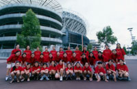

- systems -
Tonight is an appropriate time to ponder about The Society for Design and Process Science. The conference brings together a number of distinguished scientists, engineers, managers from academia, government and business involved in the exploration and utilization of integrated design and process methodologies and techniques applicable to real-world problems. Some are involved in pushing the scientific frontiers to form a newer body of science and its practice for large-scale systems. ..
|  |
Our technical focus in the interdisciplinary application of advanced technologies to control manufacturing process and manage information. We have made quantum improvements in materials science and research by practical implementation of control theoretics combined with in-house expertise in materials processing. We develop intelligent systems for real-time control of advanced material and manufacturing processes. We're advancing the science base and methodologies required to control these processes. Our objective is to extend existing control theory to ensure reliable and affordable manufacture of products from new aerospace materials.
 |
From 1970 until the present, he has been a member of the Building Materials Division of the Building and Fire Research Laboratory. As an organic chemist, his research interests center around the performance and service-life prediction of organic building materials, particularly in the areas of roofing and thermal insulation. In addition, he has participated in projects involving lead paint and the performance of materials in solar collector systems. This study followed a related investigation that examined the reliability of spot test kits for detecting the presence of lead in household paint. This research was complementary to past studies on the performance of liquid-adhesive-bonded seams.
. Chemical Process Design and Control Center Chemical Process Design and Control Center The Chemical Process Design and Control Center focuses on applied research in the design and control of chemical processes. Some of the center's activities of interest to business and industry include advanced computer methods for design of new processes, re-design of existing processes, and the design of control systems to meet new requirements such as product quality or waste minimization. Regular on-campus meetings update sponsors on recent research results and provide opportunities to meet faculty, students, and others interested in process design and control. The center's spring meeting usually includes a one-day workshop in the area of interest to the sponsors.
|
another systems site: http://www.olisystems.com/
.